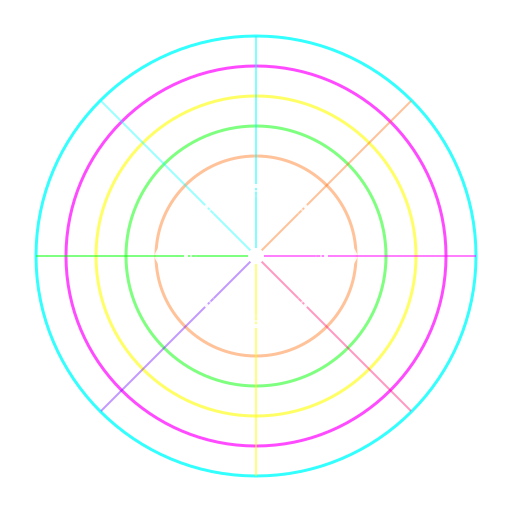

Cymatics transforma qualquer música do seu computador em visualizações psicodélicas ao vivo. Abra, clique e deixe o som tomar forma.

Visualizações
Cada modo cria uma experiência visual diferente — escolha o que mais combina com o seu momento.
Recursos
Simples de usar, bonito de ver. Feito para quem quer curtir, não configurar.
Download
Gratuito, sem cadastro, sem propaganda. Baixe e use agora mesmo.
Ficou curioso sobre como funciona por dentro? Veja o projeto no GitHub.